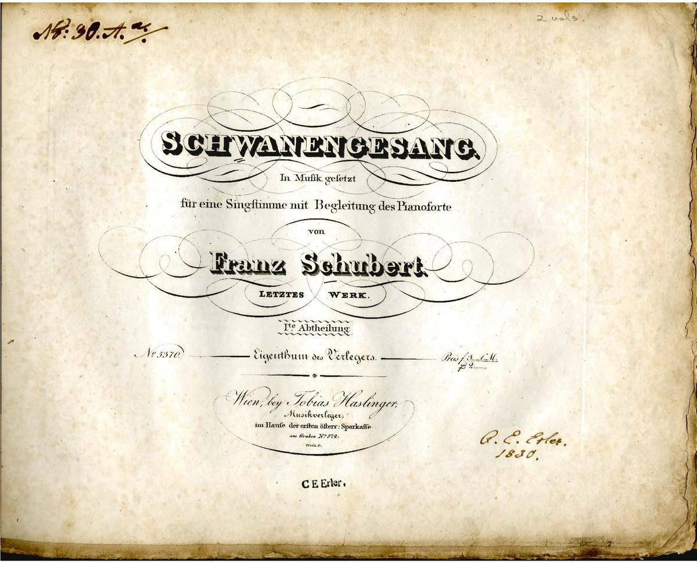

1797년 1월 31일, 오스트리아 대공국 빈에서 태어남

1828년 11월 19일, 31세에 사망
• 3명의 형과 여동생 한명이 있다, 그중 슈베르트는 넷째다
• 종교는 가톨릭교다
• 별명으로 가곡의 왕이라고 불린다
• 11세에 스타드콘빅트(궁정 신학원)에 장학생으로 입학함
1. 마왕
- 마왕 가곡 중 가장 잘 알려진 곡
- 18세, 어린나이에 작곡함
- 말발굽소리가 표현되어있어 긴장감을 더함
- 마왕, 아버지, 아들, 해설 총 네 명의 목소리가 나옴
2. 아름다운 물방앗간의 아가씨
- 빌헬름 뮐러의 시를 곡으로 재창조
- 물방앗간의 아가씨를 좋아하지만 안될것
같다는 마음을 담은 음악
- 슈베르트의 3대 연가곡집으로 불림
3. 겨울나그네
- 아름다운 물방앗간의 아가씨와 같이
빌헬름 뮐러의 시를 재창조한 연가곡집
- 슈베르트의 3대 연가곡집으로 불림
- 정작 슈베르트는 듣지 못한 음악ㅋ
4. 백조

- 슈베르트의 3대 연가곡집으로 불림
- 백조는 죽음 직전에만 운다는 전설을 토대로
만들어 최후의 작품이라는 의미에서 붙여짐
- 작가가 의도한 연가곡집이 아님
4. 아베마리아

- 호수의 연인을 가사로 하여 만든 가곡
- 성모 마리아에게 기도드리는 모습을 표현함
그 외 작품들...
교향곡: 미완성, 그레이트 실내악: 송어, 죽음과 소녀 피아노: 군대행진곡(3개), 악흥의 한때(6개), 즉흥곡(4개)...